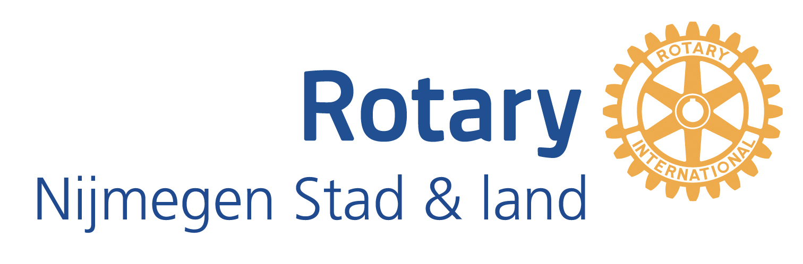

Service Above Self ← marcovanthiel.nlRotary Nijmegen Stad en Land zet zich het hele jaar door in voor goede doelen — lokaal, regionaal en wereldwijd. Hieronder onze drie lopende acties. Mooie evenementen, leuke prijzen, écht verschil.
Klik op een actie voor het volledige verhaal, de data en hoe je meedoet.
Duizenden genummerde eendjes te water — €5 per lot, een auto als hoofdprijs en heel veel andere prijzen.
Bekijk de actie →Samen met Kiwanis Cuijk verkopen we ambachtelijke kerststollen — opbrengst voor onderzoek dat het leven van kwetsbare pasgeborenen redt.
Bekijk de actie →Een avond van smaak, wijn, muziek en stille veiling — in een kasteel in de regio, voor projecten die het verschil maken voor vrouwen en meisjes.
Bekijk de actie →Service Above Self — een netwerk inzetten voor wie het zelf even niet redt. Rotary, sinds 1905
Rotary is wereldwijd de oudste serviceorganisatie van vrijwilligers — bijna 1,4 miljoen leden in ruim 200 landen, werkend onder het motto Service Above Self. Onze club Rotary Nijmegen Stad en Land verbindt ondernemers, professionals en bestuurders uit de regio, en zet die netwerken in voor lokale, regionale en internationale doelen. Van een tulpenactie tegen polio tot rugby voor Stichting Koprol — en de drie acties op deze pagina.